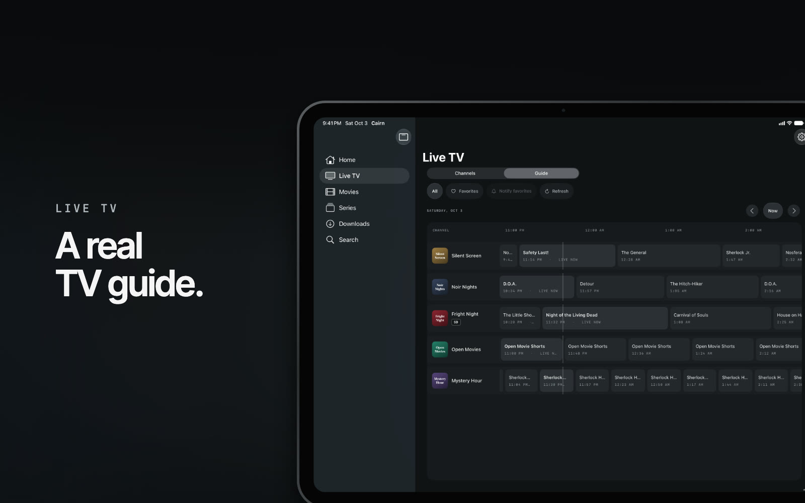

A quieter place to watch
Your media.
Every Apple screen.
Live channels, films, and series in one calm, native player. Bring your playlists, Plex server, and your own files.

Pick up where you left off.
A library with search, favorites, and Continue Watching. Your preferred audio and subtitle languages, remembered.
Make live TV feel simple.
A readable programme guide, catch-up where your source supports it, and live rewind.
Watch your way.
Flexible playback powered by mpv, subtitle controls, offline viewing, and casting from iPhone and iPad.

The planned purchase model
A good free player. One optional upgrade.
Everyday playback will be free. Cairn Pro is planned as a one-time purchase for extras such as casting and offline viewing, available across supported devices using the same Apple Account. No recurring subscription.
Your sources. Your privacy.
Cairn provides no media or IPTV service. Add sources you are entitled to use. Your library stays on your device, credentials stay in Keychain, and the app has no advertising or analytics.